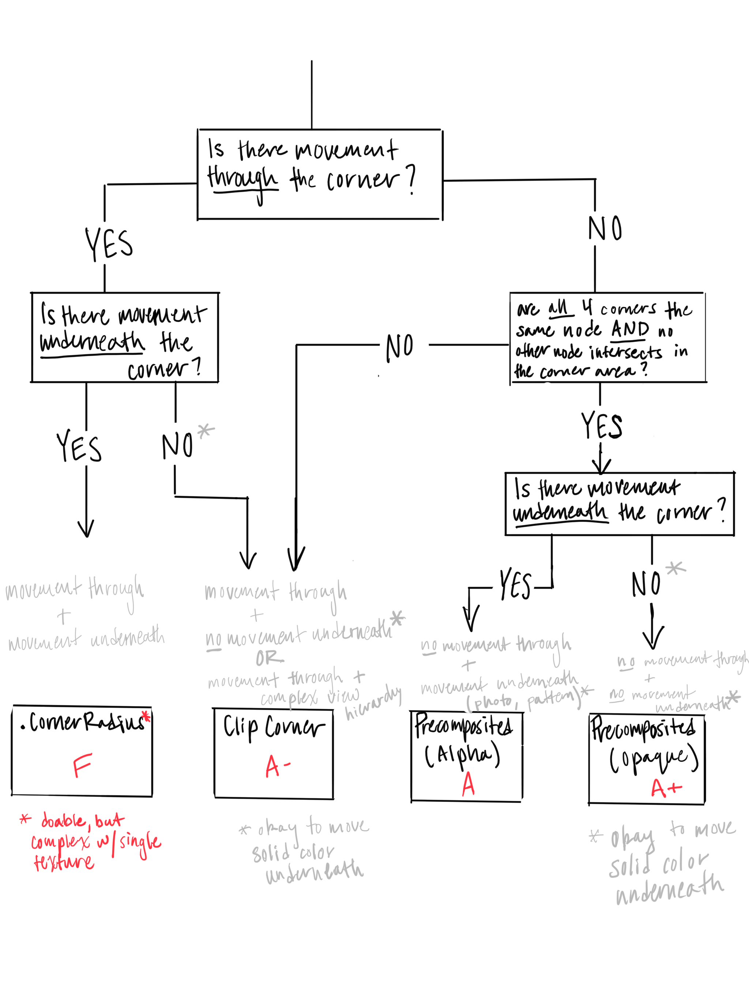

Layer 支持
在某些情况下 使用Layer代替View能显著提高app的性能。建议在不需要任何触摸处理的自定义节点中启用layer-backing
在UIKit中，因为API的不同， 手动将基于View的视图转换为layer是非常费力的。并且如果将来需要启用触摸处理，就只能将所有内容都转换回去
在Texture中，可以很简单的将整个view树转换为layer树，如果想要改回用view，直接删掉这行代码即可
rootNode.isLayerBacked = YES;
子树光栅化
将整个视图层次结构展平为一个图层，可以提高性能。但是，当使用UIKit时，可维护性和层次结构受到冲击
[rootNode enableSubtreeRasterization];
这行代码将会造成该节点的整个节点层次结构呈现为一层。
同步并发
ASViewController和ASCellNode中都有neverShowPlaceholders属性
设置该属性为YES后，主线程将会被阻塞只到cell或者VC的view被展示完成
虽然使用这个选项会类似UIKit阻塞主线程直到绘制完成，但是并没有减少Texture带来的优化。因为预加载的存在，一个node当到达屏幕显示范围时，已经几乎加载完成，因此阻塞主线程的时间也会很短。即使rangeTuningParameters属性被设置为0，其表现效果也好于UIKit。而且，因为主线程处于阻塞等待状态，所有的子节点都会并发的的diaplay。因此叫做同步并发
node.neverShowPlaceholders = YES;
通常，当cell在到达屏幕展示范围还没有完成展示渲染时，将会展示占位图直到内容被绘制完成。设置该属性为YES后，node或者ASViewController滚动起来更像UIKit.(事实上，除了Texture更快之外，并没有其他什么区别)
圆角
我们经常会使用CALayer的.cornerRadius属性在实现圆角。不幸的是，这个方便的属性会造成严重的性能损失，因此只在别无选择时才会选择使用。
为什么.cornerRadius如此昂贵
使用CALayer的.cornerRadius属性会触发离屏渲染，即每帧(当滚动时为60FPS)都执行剪切操作，即使此时该内容区域的内容并没有变化。这意味着GPU必须在每帧之间切换上下文，在合成整个帧与使用.cornerRadius的附加遍历之间
重要的是，这些消耗并不会显示在Time Profile中，因为它影响的是CoreAnimation Render Server在App自身的工作完成。这会影响许多设备的性能。
使用圆角策略需要考虑的情况
- 在圆角之下是否存在背景移动: 指的是拐角位置之后的任何运动
- 是否存在穿过圆角区域的移动:
- 是否4个角处于相同的node，并且拐角区域没有和其它节点相交
注意
可以再圆角内部有移动 而无需穿过拐角区域。例如，当移动插入时，其边距大小为角半径大小，因此当内容滚动时，也不会在拐角移动。我们也可以利用这种策略消除拐角的移动，
圆角预合成
圆角预合成是指使用贝塞尔曲线绘制角点，然后在CGContet/UIGraphicsContext中剪切内容([path clip])。此时圆角就成为了图像的一部分并且被渲染到单个CALayer中。有两种类型的预合成圆角:
- 最好的预合成圆角是使用预合成的不透明角，这是最有效的方法，可以实现零alpha混合。可惜这种方法并不灵活，如果圆角图像需要在其顶部移动，则其圆角后的背景需要为纯色。
- 第二种方法涉及使用带有预合成Alpha角的贝塞尔曲线路径。这个方法就很灵活了，是最常用的方法之一，但是增加了整个内容上Alpha混合的成本，虽然比不透明的预合成增加25%的内存，但是在现代设备上这些影响很小
这些预合成圆角的关键是，圆角只能接触一个节点，而且能与其他圆角相交。如果上面所说的存在任何一种情况，则必须使用夹角
注意
Texture node对
.corenerRaduis具有特殊的优化，仅仅当启用shouldRasterizeDescendants时(启用光栅化)，自动实现预合成Texture提供了方便的方法来创建简单、纯色的圆角矩形或圆形。
可以看UIImage + ASConveniences.h类，了解使用预合成的角(包括alpha和不透明)创建纯色、圆角可调整的图像。这对于使用image node作为placeholders或者ASButtonNode作为背景
夹角
(即用4个角将四周覆盖)
这个解决策略包含了将4个单独的不透明角图层放置在四角。这个方法非常灵活，并且性能很好。它具有4个单独层的CPU开销
这种夹角策略适合两种主要类型的圆角情况:
- 圆角接触了多个节点或者与任何节点相交的情况下的圆角
- 在固定的Texture或者照片背景上增加圆角。虽然夹角方法很复杂，但是很有用哦
使用CALayer的.cornerRadius属性
在一些极少数情况下，很适合使用.cornerRaduis属性，包括当动态内容同时在内部和圆角移动。对于某些动画，这是不可避免的。但是在很多情况下，可以通过调整设计消除运动源。
对于没有任何移动的屏幕，使用.cornerRadius危害也会小很多，也可以作为快捷方式。然而当屏幕上有任何移动，甚至不涉及角的移动，都将会造成.cornerRadius的性能折扣。例如：在导航栏中存在一个圆形元素，在其下方存在滚动视图，即使它们不重叠 也会造成影响。即使用户不与其进行互动，也会对屏幕中的所有内容进行动画处理。此外，任何屏幕上刷新都会造成圆角成本消耗
光栅化和图层支持
并不能随便使用.shouldRasterize来提高.cornerRaduis属性性能。只要没有造成重新的光栅化的操作(例如，移动、点击更改颜色、不在移动的table之上等)，就是可以使用的。通常，不鼓励这么做，很容易导致性能下降。
CALayer的.shouldRasterize和Texture的node.shouldRasterizeDescendents.无关。启用时，.shouldRasterizeDescendents将会阻止创建子节点子级的实际图层和层。
圆角策略选取

Texture对圆角的支持
使用
.cornerRadiusCGFloat cornerRadius = 20.0; _photoImageNode.cornerRoundingType = ASCornerRoundingTypeDefaultSlowCALayer;
_photoImageNode.cornerRadius = cornerRadius;使用预合成的圆角
CGFloat cornerRadius = 20.0; _photoImageNode.cornerRoundingType = ASCornerRoundingTypePrecomposited;
_photoImageNode.cornerRadius = cornerRadius;使用夹角 圆角
CGFloat cornerRadius = 20.0; _photoImageNode.cornerRoundingType = ASCornerRoundingTypeClipping;
_photoImageNode.backgroundColor = [UIColor whiteColor];
_photoImageNode.cornerRadius = cornerRadius;使用
willDisplayNodeContentWithRenderingContext设置内容的剪切路径和圆角CGFloat cornerRadius = 20.0; // Use the screen scale for corner radius to respect content scale
CGFloat screenScale = UIScreen.mainScreen.scale;
_photoImageNode.willDisplayNodeContentWithRenderingContext = ^(CGContextRef context, id drawParameters) {
CGRect bounds = CGContextGetClipBoundingBox(context);
CGFloat radius = cornerRadius * screenScale;
UIImage *overlay = [UIImage as_resizableRoundedImageWithCornerRadius:radius
cornerColor:[UIColor clearColor]
fillColor:[UIColor clearColor]];
[overlay drawInRect:bounds];
[[UIBezierPath bezierPathWithRoundedRect:bounds cornerRadius:radius] addClip];
};使用
ASImageNode使图像变圆 并添加边框
这非常适合头像图片的圆角CGFloat cornerRadius = 20.0; _photoImageNode.imageModificationBlock = ASImageNodeRoundBorderModificationBlock(5.0, [UIColor orangeColor])